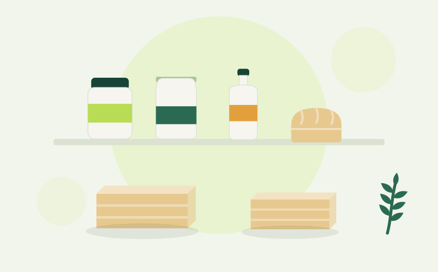

Seventeen years of reading labels
We import specialist food into Cyprus, hold it in Latsia, and sell it to shops, pharmacies and — since the e-shop opened — directly to you.

Zero Nine Trading started in 2009, which is where the name comes from. At the time, finding gluten-free bread on the island meant asking a relative to bring it back in a suitcase. Diabetics baking at home had a choice of one sweetener. We started importing because our own family needed the products, and it turned out several hundred other households did too.
What we actually do
Most of the business is still wholesale. We hold the Cyprus distribution for brands including Dragon, Bettr, Balviten and Verival, which means the stock in the warehouse in Latsia is the stock that reaches pharmacies and health shops across Nicosia, Limassol, Larnaca and Paphos.
The e-shop exists because customers kept calling the office asking to buy a single loaf. Prices here are the same as the shelf, and the availability shown on each product is the real warehouse figure rather than an estimate.
How something gets onto the site
- It has to fill a gap. If a comparable product is already on the island at a fair price, we leave it alone.
- The certification has to hold up. Organic claims need an EU control body number. Gluten-free claims need a test result under 20 ppm, not a marketing line.
- Someone here has to eat it. Every product on this site has been through the office kitchen first. Several didn't make it.
Working with us
If you run a shop, pharmacy, bakery or restaurant, we supply on trade terms with a delivery route across the island. Email the office for a current price list and minimum order.
The short version
Certifications we check
Come and collect
You can pick an order up from the office rather than paying for delivery. Monday to Friday, 8:00 to 17:00.
Get directions